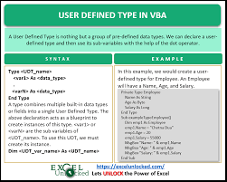
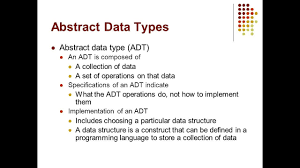

Data Types Mini Game
Click a button to reveal the meaning!
User-Defined Data Types (UDTs)
Programmers create these themselves using built-in types.
Groups related data
Easy to reuse
Makes programs easier to read
Examples: structs, classes, enums.

User-Defined Data Examples
struct Person { name, age }
class Car { speed, color }
enum Days { Monday–Sunday }

Abstract Data Types (ADTs)
ADTs describe *what* a data type can do—not how it is built.
✔ Focus on behavior
✔ Used in algorithms
✔ Helps organize code
Examples: Stack, Queue, Linked List, Map.

Abstract Data Types Examples
Stack → LIFO (Last In First Out)
Queue → FIFO (First In First Out)
Linked List → nodes connected together
Map → key-value pairs